Состав
Пейн(Нагато)
Нагато (яп. 長門, Нагато Узумаки) был шиноби Деревни Скрытого Дождя и потомком клана Узумаки. Сформировав Акацуки вместе со своими друзьями, такими же сиротами войны, Нагато мечтал принести мир жестокому миру шиноби. Тем не менее, после
смерти, Яхико, Нагато принял псевдоним Пейн (яп. ペ イ ン, Пэйн)
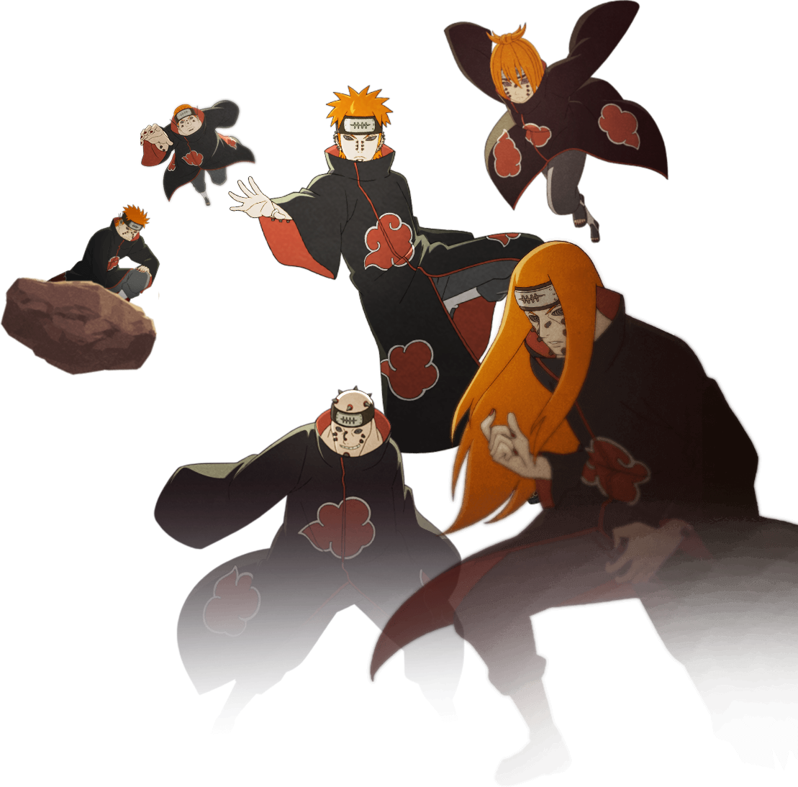
Нагато создал Шесть Путей Пейна после того, как был покалечен во время битвы с Ханзо. Поскольку он не мог двигаться или действовать сам по себе, он управлял шестью телами, чтобы осуществлять свою волю, как часть своей новой личности "Пейн".
В аниме, первое тело, которое он начал использовать, принадлежало его другу детства Яхико, что было его любимым. Для соответствия цвету волос своего погибшего друга, он покрасил волосы других Путей в тот же рыжий цвет, включая брови.
Неведомо для самого Нагато, первый состав его Шести Путей состоял из тел людей, с которыми Джирайя встречался при жизни. Нагато вживил чёрные приёмники по всему телу каждого из Путей в виде пирсингов.
Конан
Конан (яп. 小南, Конан) — была куноичи из Скрытого Дождя, и одним из основателей первой организации Акацуки. После смерти Яхико она объединилась с Нагато, который впоследствии стал контролировать Акацуки, и была единственным человеком там,
кто называл его по имени. После смерти Нагато, Конан покидает организацию и становится лидером деревни Скрытого Дождя.
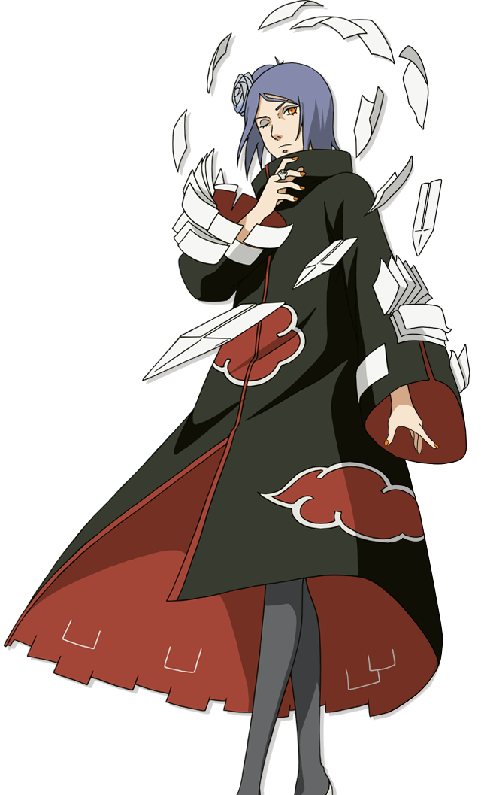
Будучи ребёнком, Конан проявляла недюжинные способности в области оригами, которое со временем из простого хобби переросло в её основное ниндзюцу. Она собственноручно создала свою уникальную технику, с помощью которой смогла превращать
всё своё тело и одежду в тысячи листов бумаги, которые могла контролировать усилием воли, превращая их в различное оружие, придавая бумаге любую форму и цвет. Для путешествий на длинные дистанции она превращала себя в бумажных бабочек
или самолётиков, а для атаки делала бумагу твёрдой как сталь, превращая её в смертоносное оружие в форме стрел, копий и сюрикенов. Так же, с помощью всё тех же листов бумаги она может обездвижить врага и даже задушить его. Своё прозвище
«Ангела» (天使, Tenshi) Конан получила за большие бумажные крылья, которые могла создавать с помощью всё той же техники. В аниме она демонстрировала возможность создания чакр из бумаги, которыми могла легко управлять, изменяя траекторию
полёта, чтобы атаковать врага с разных сторон. Несмотря на то, что бумага материал весьма не прочный, усиленная чакрой бумага Конан может выдерживать даже огонь. Отличный тому пример это огненная техника Джирайи, усиленная маслом,
которая не нанесла ей никаких повреждений. Само масло, однако, значительно снижает эффективность бумажных техник. Листы бумаги склеиваются, и Конан не может управлять ими в полной мере. Вода, казалось бы, тоже должна снижать эффективность
бумажных техник, но этого не происходит. Конан с обыкновенной лёгкостью использует бумажные техники под дождём и даже непосредственно под водой.
Итачи Учиха
Итачи Учиха (яп. うちは イタチ, У́чиха Ита́чи) — шиноби отступник, бывший член Анбу, был гением клана Учиха из Скрытого Листа. В молодости Итачи стал международным преступником, уничтожив весь свой клан, оставив в живых лишь своего младшего
брата Саске. Впоследствии Итачи присоединился к международной преступной организации, Акацуки, деятельность которой порой приводила его к конфликтам с ниндзя Листа, включая Саске, стремящегося отомстить за свой клан. После смерти Итачи,
выяснилось, что его мотивы были куда более сложными, чем казалось изначально — он верил, что все его действия были направлены на благо Саске и Конохи, и он оставался предан Скрытому Листу до самого конца.
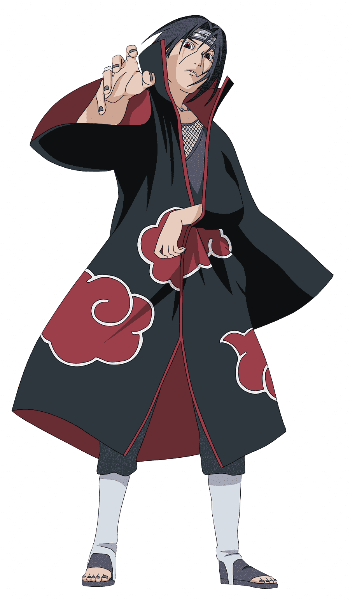
Итачи был талантливым шиноби, о чем свидетельствует скорость, с которой он продвигался в рядах ниндзя. Он безупречно владел тремя основными навыками ниндзя и часто слышал в свою сторону похвалу как от союзников, так и от врагов. В прошлом,
Орочимару, один из Саннинов, после потери руки при столкновении с ним открыто признал, что Итачи был сильнее, чем он. По словам Обито, несмотря на слабость от своей болезни, Итачи всё равно был в состоянии убить Саске во время их битвы,
если бы захотел. Будучи в душе пацифистом, Итачи старался избегать сражений, если была такая возможность. Но когда это не удавалось, он пытался закончить бой как можно быстрее, отчасти сдерживая себя. Таким образом, сражаясь даже не
в полную силу, он вынудил Какаши Хатаке, Куренай Юхи и Асуму Сарутоби (все из них были опытными джоунинами) достигнуть своего предела в битве против него. В аниме, он смог одолеть совершенного Джинчуурики и Каге Ягуру с поддержкой
от Джузо.
Кисаме Хошикаги
Кисаме Хошигаки (яп. 干柿 鬼鮫, Хошигаки Кисаме), прозванный Монстром Скрытого Тумана (яп. 霧隠れの怪人, Киригакуре но Кайджин) был шиноби Клана Хошигаки из Скрытого Тумана. После присоединения к Семи Ниндзя-Мечникам Тумана он стал ниндзя-отступником
ранга-S и позже был приставлен к Итачи Учихе в качестве члена Акацуки.
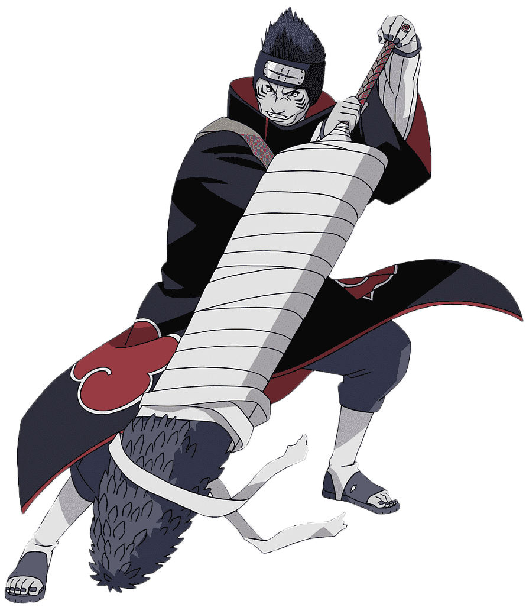
Как один из Семи Мечников Тумана, преступник S-ранга и член Акацуки, Кисаме был крайне сильным и опасным шиноби. Он с легкостью убил своего бывшего господина, который являлся одним из сильнейших мечников, а также владельцем Самехады на
тот момент. Кисаме утверждал, что из всех членов Акацуки его способности подходят лучше всего для захвата цели живой, это доказывает его единственный удачный захват Джинчуурики Четырёххвостого Роуши, чьи способности оказались большой
проблемой. В аниме Кисаме отлично держался в бою против своего партнера Итачи, хотя и открыто признавал, что тот сильнее его. Кисаме мог единолично сражаться с целой командой. Кроме того, он оказался более, чем ровней для Гая (одного
из сильнейших джоунинов Конохи) несколько раз, заставляя его открыть шесть из Восьми Врат против клона с 30% от его реальной силы, а также и седьмые врата против настоящего Кисаме, но уже без меча.
Сасори
Сасори (яп. サソリ, Сасори), также известный как Сасори Красного Песка (яп. 赤砂のサソリ, Акасуна но Сасори), был ниндзя-отступником S-ранга из Отряда Кукловодов Деревни Скрытого Песка и членом Акацуки, где он был партнёром Орочимару и, позже,
Дейдары.
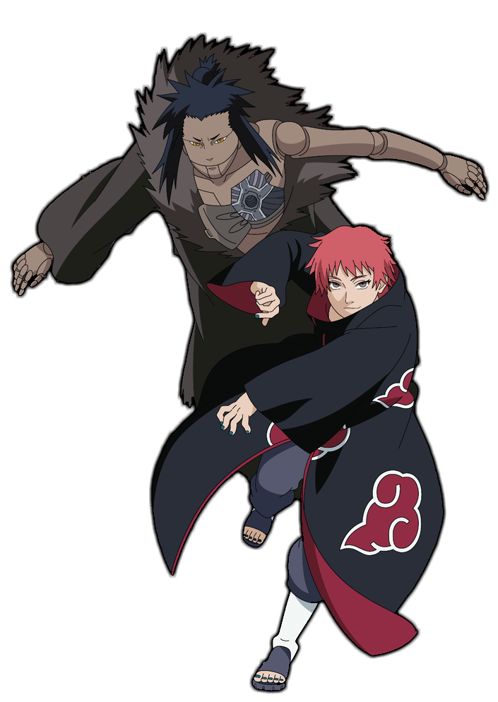
Сасори был очень сильным шиноби, способным без особых усилий одолеть и убить Третьего Казекаге, который слыл сильнейшим лидером в истории Сунагакуре. Применение Сасори своих марионеток наводило ужас на протяжении Третьей Мировой Войны
Шиноби, и из-за того, что песок становился красным от пролитой крови, он получил прозвище, "Сасори Красного Песка". Его наследие было достаточно известно, что Канкуро знал о нём и испытывал страх перед ним, хотя родился уже после того,
как Сасори покинул деревню. Дейдара открыто признавал, что Сасори был сильнейшим в их паре.
Дейдара
Дейдара (яп. デイダラ, Дэйда́ра) был ниндзя-отступником ранга-S из Скрытого Камня. Во время своего пребывания в деревне он был членом Корпуса Подрывников. После ухода из неё Дейдара был вынужден вступить в Акацуки, и стал ее самым молодым
членом. В организации он был партнёром Сасори до тех пор, пока последний не погиб, а позже — напарником Тоби до самой своей смерти.
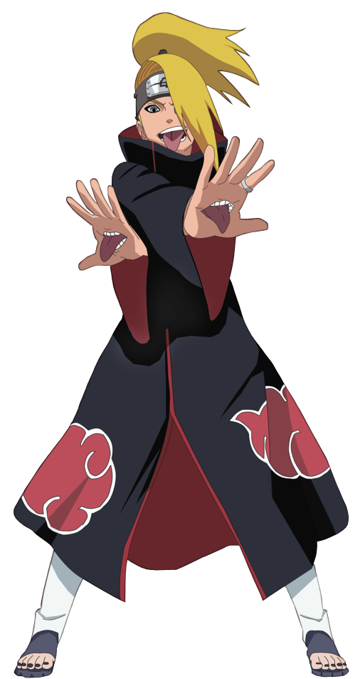
Дейдара был крайне сильным ниндзя-отступником S-ранга, чьи способности заслужили для него признание внутри Акацуки. Даже лидер организации, Пейн, признавал способности Дейдары, открыто признавая, что он был уникален в своём роде и что
его потеря была огромным ударом для Акацуки. В разное время Дейдара в одиночку победил и захватил Гаару, Джинчуурики Шукаку и Пятого Казекаге, а затем и самого Исобу, хотя и сражался с обоими на их родной территории. Он также на равных
противостоял Саске Учиха, гением клана Учиха, даже несмотря на то, что техники Саске обладали элементальным преимуществом над его техниками.
Какузу
Какузу (яп. 角都, Какудзу) был ниндзя-отступником S-ранга из Скрытого Водопада, а также членом Акацуки, который работал в паре с Хиданом. Кисаме Хошигаки в шутку называл их Комбинацией Зомби (яп. ゾンビコンビ, Дзомби Конби)[3] в связи с тем фактом,
что они не могли умереть.
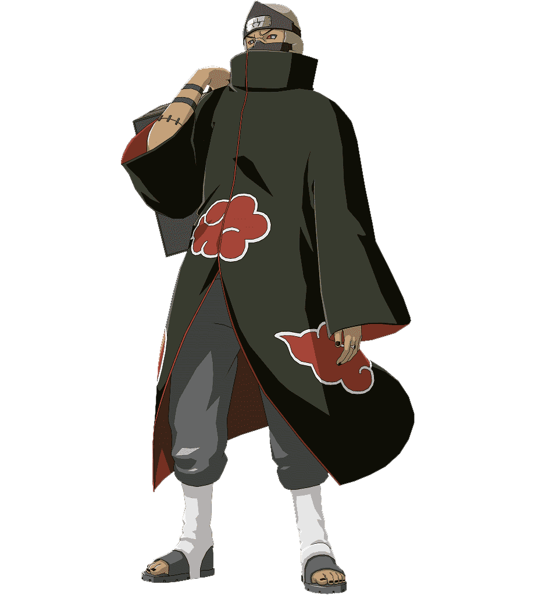
Какузу был очень мощным ниндзя, достаточно сильным, чтобы стать членом Акацуки. Во время своих частых вспышек ярости, Какузу убил всех своих бывших партнеров в организации, за исключением Хидана. Еще одним свидетельством его навыков является
тот факт, что он был избран для убийства Хаширамы и, несмотря на своё поражение, пережил битву. Он имел чрезвычайно широкий спектр методов (из-за его уникальной способности: Страх Земной Ненависти и около века бесценного опыта). Эти
способности позволяли ему бороться с несколькими противниками одновременно и, как правило, управлять ходом боя, например как в бою с Какаши Хатаке вместе с Чоуджи Акимичи и Ино Яманака в качестве поддержки, и он, скорее всего, смог
бы убить их всех, если бы на помощь не пришла команда Ямато.
Роберт Спидвагон
Роберт Э. О. Спидвагон (ロバート・E・O・スピードワゴン Robāto Ī Ō Supīdowagon?) — главный союзник, появившийся в первой части серии Невероятные приключения ДжоДжо, Призрачная кровь. Бывший Лондонский бандит, проживающий в Огр-Стрит, Спидвагон сдруживается
с Джонатаном Джостаром и становится верным союзником его дела.
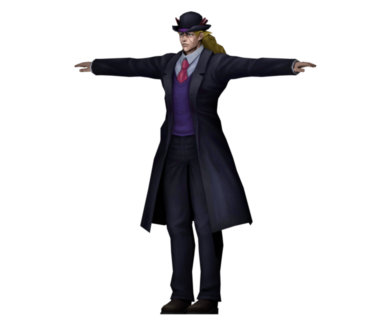
Хидан
Хидан (яп. 飛段, Хидан) — ниндзя-отступник S-ранга из Скрытых Горячих Источников, позже присоединившийся к Акацуки. Был партнёром Какузу, несмотря на их взаимную неприязнь друг к другу. Также являлся вторым новым членом Акацуки на момент
появления Тоби. Кисаме Хошигаки в шутку называл Хидана и Какузу Комбинацией Зомби (яп. ゾンビコンビ, Дзомби Комби).
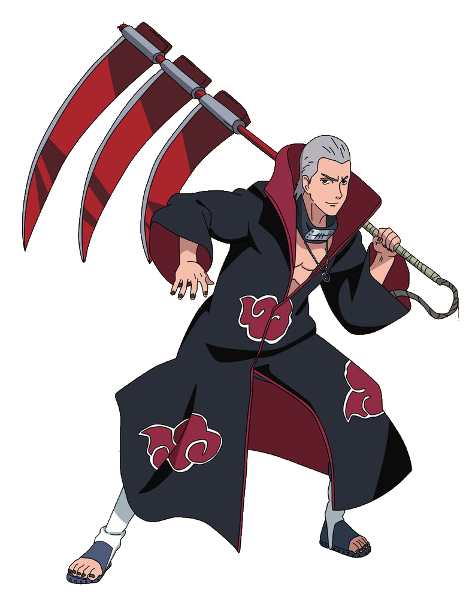
Хидан является очень сильным шиноби, что Югакуре предпочитает не иметь дело с таким ниндзя-отступником S-ранга, поскольку в деревне не было ни одного ниндзя, который мог бы его схватить. Его навыки были достаточно высоки, чтобы он был
принят в Акацуки. Вместе со своим партнером Какузу, он был в состоянии захватить Джинчуурики двухвостого, Югито Нии, несмотря на её Режим Хвостатого Зверя.Главным преимуществом Хидана является его неспособность умереть независимо от
любых причин, за исключением недоедания. Это результат экстенсивных экспериментов с различными техниками религии Джашина. Его бессмертие позволяет ему выжить после многочисленных смертельных ран и практически любых форм расчленения;
он даже сохранил способность говорить после того, как ему отрубили голову. Тем не менее, все еще необходимо присоединить голову Хидана к его телу, чтобы контролировать последнее, как было показано, когда Какузу вернул её обратно, и
другие части тела, при необходимости. Несмотря на попытку Шикамару взорвать Хидана в клочья, используя сотни взрывных печатей, привязанных ко всему его телу, ему удалось только обезглавить его и повредить его тело (после ослабления
сухожилий, что Какузу использовал, чтобы повторно прикрепить его голову). Хотя Хидан равнодушен к большинству физических атак, а также имеет возможность выжить после ранений, он всё же восприимчив к боли, от которой получает наслаждение
за счёт своих противников.
Орочимару
Как и все остальные ученики Третьего Хокаге, Орочимару является необычайно талантливым шиноби, который был признан гением от природы. Сам Хаширама Сенджу, Бог Шиноби, оценил навыки Орочимару. После Второй Мировой Войны Шиноби он стал широко
известными, ибо Ханзо, считающийся невероятно могущественным шиноби, признал его, как и Цунаде с Джираей, сильнейшими шиноби своего поколения. Орочимару прославился своей силой и наводил страх на весь мир ниндзя. Даже Акацуки рассматривали
его как угрозу, которую необходимо ликвидировать.
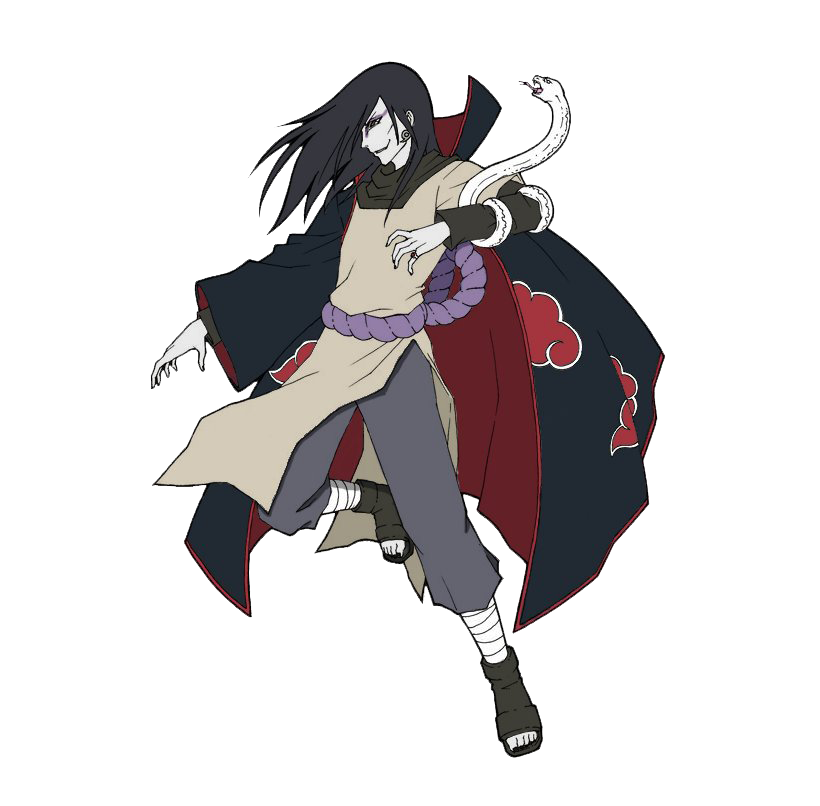
Как и все остальные ученики Третьего Хокаге, Орочимару является необычайно талантливым шиноби, который был признан гением от природы. Сам Хаширама Сенджу, Бог Шиноби, оценил навыки Орочимару. После Второй Мировой Войны Шиноби он стал широко
известными, ибо Ханзо, считающийся невероятно могущественным шиноби, признал его, как и Цунаде с Джираей, сильнейшими шиноби своего поколения. Орочимару прославился своей силой и наводил страх на весь мир ниндзя. Даже Акацуки рассматривали
его как угрозу, которую необходимо ликвидировать. Незадолго до вторжения в Коноху Хирузен размышлял над тем, что в деревне нет ни одного шиноби, который смог бы одолеть Орочимару. Пускай вторжение, в общем, провалилось, но действия
Орочимару привели к смерти Третьего и сделали военную силу Конохи временно недееспособной. Хотя Саске удалось расправиться с Орочимару во Части II, он признал, что смог сделать это только благодаря тому, что Саннин был крайне ослаблен.
Белый Зецу
Белый Зецу (яп. 白ゼツ, Щиро-Дзэцу) был половиной члена Акацуки Зецу (яп. ゼツ, Дзэцу), наряду с Чёрным Зецу. Он был одной из первых жертв Бесконечного Цукуёми и позже был вытащен из Демонической Статуи Внешнего Пути Чёрным Зецу и насыщен ДНК
Хаширамы Сенджу Мадарой Учиха.
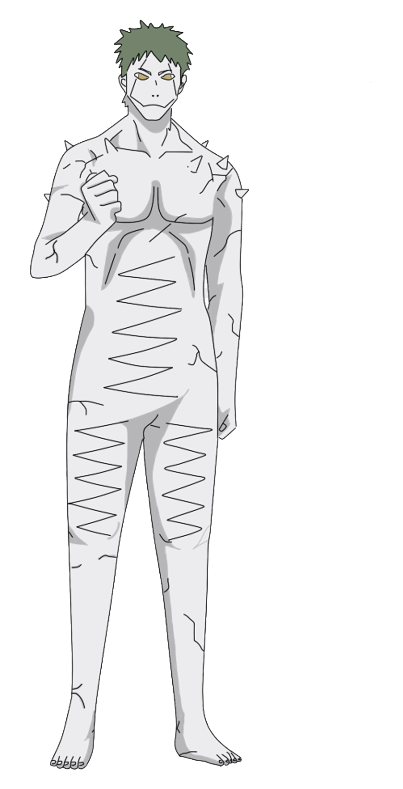
Белый Зецу был описан Обито как "не фронтовик", и таким образом никогда не принимал непосредственного участия в битвах. Однако, используя несколько вспомогательных способностей он оказался очень полезным для своих союзников и мастера.Он
мог создавать и отдаленно общаться с почти идентичными клонами самого себя, которые могли поглощать чакру человека. С помощью своей Споровой техники Белый Зецу смог посадить эти клоны на тела других людей в виде спор, которые были
необнаружимы даже для типа датчика и уровня Шиноби на уровне Каге. После активации эти споры превратились бы в белую массу, которая окружала бы лиц, которых они сформировали, и поглощала их чакру, ограничивая их движения. Клоны могли
также использовать эту украденную чакру, чтобы пополнить запас чакры союзника, присоединившись к нему или ней. Обито прикрепил несколько из этих спор к Саске Учихе, чтобы следить и даже помогать ему, когда это необходимо.
Черный Зецу
Чёрный Зецу (яп. 黒ゼツ, Куро-Дзэцу) был физическим воплощением воли Принцессы Кагуи Ооцуцуки. Он тайно провоцировал многие события, которые сформировали мир шиноби таким, какой он нужен для обеспечения возрождения Кагуи. Для достижения своих
планов он выдавал себя за воплощённую волю Мадары Учихи и позже объединился с Белым Зецу, став половиной члена Акацуки, известной как просто Зецу (яп. ゼ ツ, Дзэцу).
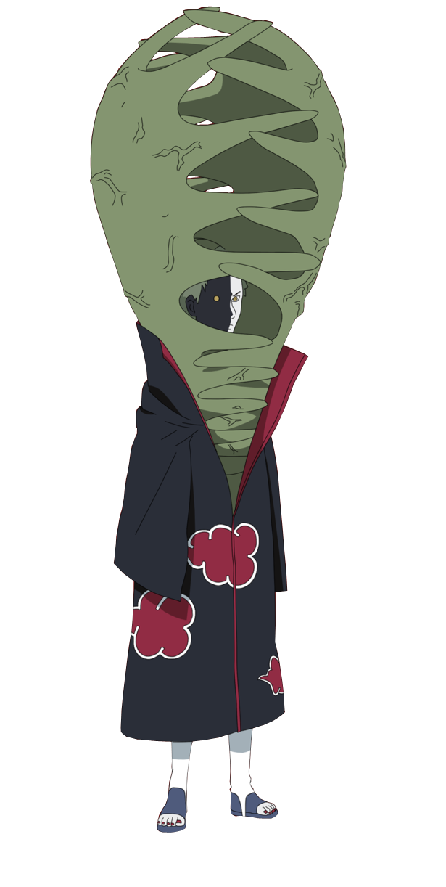
Используя на протяжении веков, Чёрный Зецу способен записывать события, которые он отмечает, а также показать эти "записи" другим, сливаясь с ними. Чёрный Зецу показал себя как очень хорошего сенсора, который был в состоянии ощутить Наруто
и Киллера Би после того, как они пересекли барьер на острове черепахе, несмотря на то, что находились друг от друга на довольно большом расстоянии. На протяжении многих веков, Чёрный Зецу был в состоянии почувствовать и отличать различные
оттенки чакры, таким образом найдя Асуру и Индру после их перевоплощения. В то время, как Зецу был соединён из двух половин, Чёрный Зецу имел доступ к способностям Белого Зецу, пользуясь клетками Сенджу, тем самым используя стихию
Дерева, но, правда, в более слабой форме. Чёрный Зецу добился этого путём преобразования белой массы и растений на своём теле, превращая их в корни во время битвы.